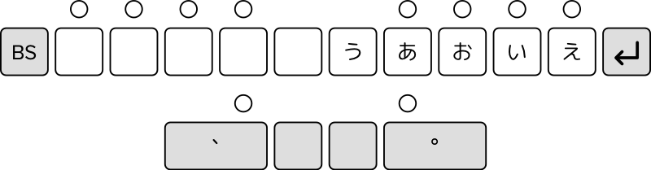

ステノワード一般課程
StenoWord General Course
Warning: I am not fluent in Japanese; the contents may not be
entirely accurate.
Contents
- Vowels and Punctuation
-
か, さ, は, and た Rows and Voiced Consonants
-
な, ま, や, ら, and わ Rows; を, ん, and っ; Palatal Sounds;
Space
- Special Kana
- Numerals
- Alphabet
- Briefs: ある, おる, いる, する, です
-
Briefs: いたします, のであります, のでございます
- Complex Sounds (い series)
- Complex Sounds (く series)
- Complex Sounds (ん series)
- Long Vowels
- Palatal Sounds
- Long Palatal Sounds
- Palatal Sounds with く
- Complex Sounds (つ series)
- Geminated Consonants
- Common Words (そういう, こと, もの)
- Common Words (そういって)
- Compound Particles
- Common Words (わたくし, あなた)
- Briefs: ような, ふうな
-
Briefs: して, した, あって, おって, etc.
-
Briefs: いたした, いたして, のであろう
- Negating Particles
- Briefs: 言う, まいる, 思う, 考える
- Briefs: になる, につく, にたいする
- Briefs: に置く, による, に関する
- Briefs: いただく, 従う, 来る, 行く
- Briefs: なさる, に基づく, に当たる
- Briefs: なる, 見る, 出る, 出来る
第１課 「あいうえお」（母音）と句読点
Lesson 1: Vowels and Punctuation

-
ホームポジション（〇キー）に正しく指を置き、あとの練習問題を打ってみましょう。
- 「、」は左親指で、「。」は右親指で打ちます。
-
「う」は右人差指で打ちます。打ち終わったら、指は必ずホームポジションへ返しましょう。
-
母音（あいうえお）キーは、一切の基本となるものです。正確さを第一にゆっくり打ちましょう。頭でなく指に覚え込ませます。
-
改行は「え」の右隣にある矢印キーを押すと、強制改行されます。（文章の途中で改行したいときに使います。）
-
「ステノワード」は指で押したときではなく、指を離したときに文字表示がなされます。
-
Place all of your fingers correctly on the home position (keys
marked 〇 above) and try the following.
-
、 is pressed with the left thumb, and 。 with the right thumb.
-
う is pressed with the right index finger. When you finish pressing,
be sure to return your fingers to the home position.
-
The vowel keys are the basis of everything. Press slowly, focusing
on accuracy. Let your fingers remember it, not your head.
-
To add a line break, press the arrow key to the right of え. Use
this when you want to break a line in the middle of a sentence.
-
StenoWord outputs text when you release the keys, not when you press
them.
| |
rA |
rI |
rU |
rE |
rO |
| l |
あ |
い |
う |
え |
お |
第２課 「かさはた」行と濁音・半濁音
Lesson 2: か, さ, は, and た Rows and Voiced Consonants
-
「か行」（かきくけこ）は、子音キー「か」（左人差指）と右母音キーのうちの1つを同時押しし、入力します。たとえば「き」を打ちたいときは、子音キー「か」（左人差指）と母音キー「い」（右薬指）を同時押しします。たとえば「き」を打ちたいときは、子音キー「か」（左人差し指）と母音キー「い」を同時押しします。
-
「さ行・た行・は行」の各文字も、同様の操作法です。
たとえば「そ」を打ちたいときは、左人差指を伸ばして子音キー「さ」
を右中指で母音キー「お」を、それぞれ同時に押しします。
-
濁音は、上記操作法に加えて「潤」キー（左小指）も同時に押します。
たとえば「だ」を打つときは、子音キー「た」（左薬指）及び「濁」キー（左小指）と母音キー「あ」（右人差指）の計3キーを同時押しします。
-
半濁音 （ぱぴぷペぽ）は、「濁」キーと右手で打とうとする字の母音も
ーを、それぞれ同時に押します。
たとえば「ペ」を打ちたいときは「濁」キー（左小指）と、母音キーの「え」右小指）の計2キーを同時に押します。
-
To enter a syllable from the か-row, press the か key with the left
index finger and one of the right vowel keys at the same time. For
example, き is made by pressing か and い together.
-
The same approach is used for syllables in the さ, は, and た rows.
For example, そ is made my pressing さ and お together.
-
For syllables with voiced consonants, in addition to the method
above, press the 濁 key at the same time. For example, だ can be
written by pressing 濁, た, and あ all together.
-
For syllables with semi-voiced consonants (ぱ, ぴ, ぷ, ぺ, ぽ),
press only the 濁 key and the vowel key. For example, ぺ can be
written by pressing 濁 and え.
| |
rA |
rI |
rU |
rE |
rO |
| lT |
た |
ち |
つ |
て |
と |
| lH |
は |
ひ |
ふ |
へ |
ほ |
| lK |
か |
き |
く |
け |
こ |
| lS |
さ |
し |
す |
せ |
そ |
| lPT |
だ |
|
|
で |
ど |
| lPH |
ば |
び |
ぶ |
べ |
ぼ |
| lPK |
が |
ぎ |
ぐ |
げ |
ご |
| lPS |
ざ |
じ |
ず |
ぜ |
ぞ |
| lP |
ぱ |
ぴ |
ぷ |
ぺ |
ぽ |
第３課 「なまやらわ」行「をんっ」とよう音・スペース
Lesson 3: な, ま, や, ら, and わ Rows; を, ん, and っ; Palatal Sounds;
Space
-
「な行・ま行・や行・ら行・わ行」の各文字は、各子音キーと「、」キー（左親指）及び、打ちたい字の母音キーの計3キーを同時に押します。例えば「な」を打つときは、子音キー「な」と左親指「、」キー（は行と区別するため）及び母音キー「あ」（右人差指）を同時押しします。
-
「を」は、子音キー「わ」と「、」キー（左親指）及び、母音キー
「あ」を同時に押します。
「ん」は子音キー「わ」と「、」キー
（左親指）及び、母音キー「え」を 同時に押します。
「っ」は子首キー「わ」と「、」キー（左親指）及び、母首キー「う」を同時に押します。
-
「や」は「、」キー（左親指）と母音キー「あ」とを同時に押します。
「ゆ」は「、」キー（左親指）と母音キー「う」とを、同時に押します。
「よ」は「、」キー（左親指）と母音キー「お」とを、同時に押します。
- 「スペース』は「スペース」キー（右親指）を押します。
-
To enter a syllable from the な, ま, や, ら, and わ rows, press the
corresponding consonant and vowel keys as well as the 、 key. For
example, な can be written by pressing は, あ, and 、 all together.
-
To write を, press わ, あ, and 、 at the same time.
To write ん, press わ, え, and 、 at the same time.
To write っ, press わ, う, and 、 at the same time.
-
To write ゃ, press 、 and あ at the same time.
To write ゅ, press 、 and う at the same time.
To write ょ, press 、 and お at the same time.
-
To write a space, press the Space (スペース) key with the right
thumb.
| |
rA |
rI |
rU |
rE |
rO |
| lLP |
わ |
|
っ |
ん |
を |
| lLT |
ら |
り |
る |
れ |
ろ |
| lLH |
な |
に |
ぬ |
ね |
の |
| lLK |
ま |
み |
む |
め |
も |
| lLS |
や |
|
ゆ |
|
よ |
| lL |
ゃ |
|
ゅ |
|
ょ |
第４課 カタカナ・長音・記号
-
カタカナ
カタカナのことばも、ひらがなモードのまま、聞こえたとおりに入力します。
-
特殊なカタカナ・長音・記号
下記の文字・記号などは、代替する打ち方がないので、重要です。
必ずマスターしましょつ。
Lesson 4: Special Kana
-
Katakana: Write katakana words exactly as you hear then, even
when in hiragana mode.
-
Special katakana, long sounds, symbols: The following
characters and symbols are important because there is no other way
to write them. Make sure to memorize them.
| |
rAR |
rIR |
rUR |
rER |
rOR |
| lTHS |
ぁ |
ぃ |
ぅ |
ぇ |
ぉ |
| |
rUN |
|
rA |
|
r |
| lPTHS |
ヴ |
lSM |
・ |
lH |
ー |
第５課 数字
Lesson 5: Numerals
-
「数字」を打つときは、「数字」キーを押しながら、キー側面に書かれている１〜０の各キーを押します。
-
「数字テンキー」で連続的に数字入力もできますが、ここでは上記の方法での練習をしましょう。
-
To write a number, hold the number (数字) key while pressing each of
the keys 1 through 0 written on the side of the key.
-
You can also enter numbers with the numeric keypad, but let's
practice with the method above.
第６課 アルファベットの入力
第4課のカタカナの入力と同様に、アルファベットも、ひらがなモードのまま、聞こえたとおりに入力します。
パソコンがアルファベットに変換していないときは、校正でアルファベットに修正します。
A→「えー」と入力します。
同様に
B「びー」、C「しー」、D「で一 (でいー) 」、
E「いー」、F「えふ」、G「じー」。
H「えっち」(xえいち）、I「あい」、J「じぇー」(xじえい）、
K「けー」、L「える」、M「えむ」、N「えぬ」。
O「おー」、P「ぴー」、Q「きゅー」、R「あーる」、S「えす」、
T「て一 (ていー) 」、u「ゆー」。
V「ぶい」、W「だぶる」(xだぶりゅー)、
X「えっくす」、Y「わい」、Z「ぜっと」。
※ 「D」「T」について
アルファベット表記する場合にかぎり、
「D」 →「でー」、「T」→「てー」と打ちます。
OK例）
Tシャツ →「てーしゃつ」
DVD →「でーぶいで一」
NG例）
ミルクティー → ×「みるくてー」 〇「みるくてぃー」
ディーゼル → ×「で一ぜる」 〇「でぃーぜる」
Lesson 6: Alphabet
As with katakana from Lesson 4, write the letters of the alphabet
exactly as pronounced, staying in hiragana mode.
If your computer does not convert it to Latin letters, use
proofreading to correct it.
Write the letter A as えー, and the rest as follows:
B びー, C しー, D で一 or でいー;
E いー, F えふ, G じー.
H えっち (not えいち), I あい, J じぇー (not じえい);
K けー , L える, M えむ, N えぬ.
O おー, P ぴー, Q きゅー, R あーる, S えす;
T て一 or ていー, u ゆー.
V ぶい, W だぶる (not だぶりゅー);
X えっくす, Y わい, Z ぜっと.
* D and T are written as でー and てー respectively only when
used as letters.
RIGHT:
Tシャツ → てーしゃつ
DVD → でーぶいで一
WRONG:
ミルクティー → ×「みるくてー」 〇「みるくてぃー」
ディーゼル → ×「で一ぜる」 〇「でぃーぜる」
第７課 ある おる いる する です
Lesson 7: ある, おる, いる, する, です
| |
r |
rAOR |
rOIR |
rIER |
rUER |
rR |
| lL |
|
ある |
おる |
いる |
する |
|
| lPK |
ます |
あります |
おります |
います |
します |
です |
| lPH |
まして |
ありまして |
おりまして |
いまして |
しまして |
でして |
| lPT |
ました |
ありました |
おりました |
いました |
しました |
でした |
| lPS |
ましょう |
ありましょう |
おりましょう |
いましょう |
しましょう |
でしょう |
| lPTHK |
ません |
ありません |
おりません |
いません |
しません |
でない |
第８課 いたします のであります のでございます
Lesson 8: いたします, のであります, のでございます
| |
rOER |
rAOER |
rN |
rNAO |
rNAOE |
| lL |
いたす |
ござる |
ない |
のである |
のでござる |
| lPK |
いたします |
ございます |
のです |
のであります |
のでございます |
| lPH |
いたしまして |
ございまして |
のでして |
のでありまして |
のでございまして |
| lPT |
いたしました |
ございました |
のでした |
のでありました |
のでございました |
| lPS |
いたしましょう |
ございましょう |
のでしょう |
のでありましょう |
のでございましょう |
| lPTHK |
いたしません |
ございません |
のではない |
のでありません |
のでございません |
第９課 二音入力（い音）
「い」キーとの同時押しての二音文字校習
Lesson 9: Complex Sounds (い Series)
Press the い key at the same time to add an い to the syllable.
| |
rAI |
rUI |
rIE |
rOI |
| l |
あい |
うい |
えい |
おい |
| lT |
たい |
つい |
てい |
とい |
| lH |
はい |
ふい |
へい |
ほい |
| lK |
かい |
くい |
けい |
こい |
| lS |
さい |
すい |
せい |
そい |
| lLP |
わい |
|
|
|
| lLT |
らい |
るい |
れい |
ろい |
| lLH |
ない |
ぬい |
ねい |
のい |
| lLK |
まい |
むい |
めい |
|
| lLS |
やい |
ゆい |
|
よい |
| lPT |
だい |
づい |
でい |
どい |
| lPH |
ばい |
ぶい |
べい |
|
| lPK |
がい |
ぐい |
げい |
ごい |
| lPS |
ざい |
ずい |
ぜい |
ぞい |
| lP |
ぱい |
ぷい |
ぺい |
ぽい |
※ 打ち消しの「ない」は、lLrNを使用すると便利です。
* When writing ない to express negation, it is more convenient to use
lLrN
第１０課 二音入力（く音）
「え」キーとの同時押して、2字目の「く音」の二音文字。
Lesson 10: Complex Sounds (く Series)
Press the え key at the same time to add a く to the syllable.
|
rAE |
rUE |
rOE |
rUIE |
rAO |
| l |
あく |
うく |
おく |
えく |
いく |
| lT |
たく |
つく |
とく |
| lH |
はく |
ふく |
ほく |
| lK |
かく |
くく |
こく |
| lS |
さく |
すく |
そく |
| lLP |
わく |
|
|
| lLT |
らく |
るく |
ろく |
| lLH |
なく |
ぬく |
のく |
| lLK |
まく |
むく |
もく |
| lLS |
やく |
ゆく |
よく |
| lPT |
だく |
づく |
どく |
| lPH |
ばく |
ぶく |
ぼく |
| lPK |
がく |
|
ごく |
| lPS |
ざく |
ずく |
ぞく |
| lP |
ぱく |
ぷく |
ぽく |
第１１課 二音入力（はつ音）
Lesson 11: Complex Sounds (ん Series)
|
rA |
rI |
rU |
rE |
rO |
| lHK |
かん |
きん |
くん |
けん |
こん |
| lTH |
はん |
へん |
ひん |
ほん |
ふん |
| lTK |
あん |
いん |
うん |
えん |
おん |
| lHS |
さん |
しん |
すん |
せん |
そん |
| lTS |
たん |
ちん |
つん |
てん |
とん |
| lLPK |
まん |
みん |
むん |
めん |
もん |
| lLPH |
なん |
にん |
ぬん |
ねん |
のん |
| lLPT |
らん |
りん |
るん |
れん |
ろん |
| lLPS |
やん |
|
ゆん |
|
よん |
| lPTK |
わん |
|
|
|
|
| lPTHK |
ぱん |
ぴん |
ぷん |
ぺん |
ぽん |
| lPHK |
がん |
ぎん |
ぐん |
げん |
ごん |
| lPTH |
ばん |
びん |
ぶん |
べん |
ぼん |
| lPHS |
ざん |
じん |
ずん |
ぜん |
ぞん |
| lPTS |
だん |
|
|
でん |
どん |
第１２課 長音
Lesson 12: Long Vowels
|
rA |
rU |
rO |
| lLTK |
ああ |
おう |
うう |
| lLHS |
さあ |
そう |
すう |
| lLHK |
かあ |
こう |
くう |
| lLTH |
はあ |
ほう |
|
| lLTS |
|
とう |
つう |
| lLPTHK |
ばあ |
ぼう |
ぶう |
| lLPTHS |
やあ |
|
ゆう |
| lLPTK |
まあ |
もう |
|
| lLTHK |
なあ |
のう |
ぬう |
| lLTHS |
|
ろう |
|
| lLPTS |
だあ |
どう |
づう |
| lLPTH |
ばあ |
ぼう |
ぶう |
| lLPHK |
があ |
ごう |
ぐう |
| lLPHS |
ざあ |
ぞう |
ずう |
第１３課 よう音
Lesson 13: Palatal Sounds
|
rUOE |
rUOIE |
rAOIE |
| lS |
しゃ |
しゅ |
しょ |
| lK |
きゃ |
きゅ |
きょ |
| lH |
ひゃ |
ひゅ |
ひょ |
| lT |
ちゃ |
ちゅ |
ちょ |
| lP |
ぴゃ |
ぴゅ |
ぴょ |
| lLK |
みゃ |
みゅ |
みょ |
| lLH |
にゃ |
にょ |
にょ |
| lLT |
りゃ |
りゅ |
りょ |
| lPS |
じゃ |
じゅ |
じょ |
| lPK |
ぎゃ |
ぎゅ |
ぎょ |
| lHS |
しゃん |
しゅん |
しょん |
| lHK |
きゃん |
きゅん |
きょん |
| lTH |
|
ひゅん |
ひょん |
| lTS |
ちゃん |
ちゅん |
ちょん |
| lPTHK |
|
ぴゅん |
ぴょん |
| lLPK |
|
みゅん |
|
| lLPH |
にゃん |
|
|
| lPTH |
|
びゅん |
|
| lPHK |
ぎゃん |
|
|
| lPHS |
じゃん |
じゅん |
じょん |
第１４課 よう音（長音）
Lesson 14: Long Palatal Sounds
|
rUOE |
rUOIE |
rAOIE |
| lLHS |
しゃあ |
しゅう |
しょう |
| lLHK |
きゃあ |
きゅう |
きょう |
| lLS |
|
|
| lLTH |
|
ひゅう |
ひょう |
| lLTS |
ちゃあ |
ちゅう |
ちょう |
| lLPTHK |
|
ぴゅう |
ぴょう |
| lLPTK |
|
|
みょう |
| lLTHK |
にゃあ |
にゅう |
にょう |
| lLTHS |
|
りゅう |
りょう |
| lLPTH |
|
びゅう |
びょう |
| lLPHK |
|
ぎゅう |
ぎょう |
| lLPHS |
じゃあ |
じゅう |
じょう |
第１５課 よう音（く音）
Lesson 15: Palatal Sounds with く
|
rRUOE |
rRUOIE |
rRAOIE |
| lLT |
りゃく |
|
りょく |
| lHS |
しゃく |
しゅく |
しょく |
| lHK |
きゃく |
|
きょく |
| lTH |
ひゃく |
|
|
| lTS |
ちゃく |
|
ちょく |
| lLPK |
みゃく |
|
|
| lLPH |
にゃく |
|
|
| lPHS |
じゃく |
じゅく |
じょく |
| lLPTH |
びゃく |
|
|
| lLPHK |
ぎゃく |
|
ぎょく |
第１６課 二音入力（つ音）
Lesson 16: Complex Sounds (つ Series)
|
rAIE |
rAOI |
rUOI |
rAOE |
rOIE |
| l |
あつ |
いつ |
うつ |
えつ |
おつ |
| lS |
さつ |
しつ |
すつ |
せつ |
そつ |
| lK |
かつ |
きつ |
くつ |
けつ |
こつ |
| lH |
はつ |
ひつ |
ふつ |
へつ |
ほつ |
| lT |
たつ |
ちつ |
つつ |
てつ |
とつ |
| lP |
ぱつ |
ぴつ |
ぷつ |
|
ぽつ |
| lLS |
やつ |
|
|
|
よつ |
| lLK |
まつ |
みつ |
むつ |
めつ |
もつ |
| lLH |
なつ |
につ |
|
ねつ |
|
| lLT |
らつ |
りつ |
るつ |
れつ |
|
| lPT |
だつ |
|
づつ |
|
|
| lPH |
ばつ |
びつ |
ぶつ |
べつ |
ぼつ |
| lPK |
がつ |
ぎつ |
ぐつ |
げつ |
ごつ |
| lPS |
ざつ |
じつ |
ずつ |
ぜつ |
|
第１７課 促音
Lesson 17: Geminated Consonants
|
rAIE |
rAOI |
rUOI |
rAOE |
rOIE |
| lLTK |
あっ |
いっ |
うっ |
えっ |
おっ |
| lLHS |
さっ |
しっ |
すっ |
せっ |
そっ |
| lLHK |
かっ |
きっ |
くっ |
けっ |
こっ |
| lLTH |
はっ |
ひっ |
ふっ |
へっ |
ほっ |
| lLTS |
たっ |
ちっ |
つっ |
てっ |
とっ |
| lLPTHK |
ぱっ |
ぴっ |
ぷっ |
ぺっ |
ぽっ |
| lLPTHS |
やっ |
|
ゆっ |
|
よっ |
| lLPTK |
まっ |
みっ |
むっ |
めっ |
もっ |
| lLTHK |
なっ |
にっ |
ぬっ |
ねっ |
のっ |
| lLTHS |
らっ |
りっ |
るっ |
れっ |
ろっ |
| lPTHS |
わっ |
|
|
|
|
| lLPTS |
だっ |
ぢっ |
づっ |
でっ |
どっ |
| lLPTH |
ばっ |
びっ |
ぶっ |
べっ |
ぼっ |
| lLPHK |
がっ |
ぎっ |
ぐっ |
げっ |
ごっ |
| lLPHS |
ざっ |
じっ |
ずっ |
ぜっ |
ぞっ |
第１８課 常用語（そういう・こと・もの）
Lesson 18: Common Words (そういう, こと, もの)
|
rR |
rRUO |
rROIE |
| l |
|
こと |
もの |
| lS |
そういう |
そういうこと |
そういうもの |
| lK |
こういう |
こういうこと |
こういうもの |
| lH |
ああいう |
ああいうこと |
ああいうもの |
| lT |
という |
ということ |
というもの |
| lLPS |
どういう |
どういうこと |
どういうもの |
| lLH |
|
のこと |
|
次のように1アクションで入力する方法もあります。覚えておくと便利です。
The following words may also be written in one stroke:
|
関係
|
lHKrRIE |
日本
|
lTHrOI |
| およそ |
lLTHSrRO |
問題
|
lLPKrRO |
|
生活
|
lHSr |
病気
|
lLPTHrN |
|
種類
|
lLPTrUI |
方面
|
lTHrRO |
|
制度
|
lLHSrE |
世界
|
lLSrIE |
|
私
|
lLPr |
第１９課 常用語（そういって）
Lesson 19: Common Words (そういって)
|
rR |
| lLS |
そういって |
| lLK |
こういって |
| lLH |
ああいって |
| lLT |
といって |
| lHS |
そういった |
| lHK |
こういった |
| lTH |
ああいった |
| lTS |
といった |
|
先生
|
lHSrRIE |
十分
|
lTHrRU |
|
的
|
lMPTHSr |
内容
|
lLTHKrI |
|
改善
|
lHKrRAI |
第２０課 複合助詞
Lesson 20: Compound Particles
|
r |
rR |
rROI |
| lLH |
には |
|
|
| lTH |
では |
|
|
| lLTH |
とは |
|
|
| lLPH |
ので |
のでは |
|
| lLPK |
けれども |
まで |
|
| lLHK |
ないか |
|
|
| lLTHK |
|
|
のに |
|
rRA |
rRI |
rRU |
rRE |
rRO |
| lL |
だが |
にも |
のも |
でも |
のが |
|
東京
|
lTKrR |
経済
|
lKrRIE |
|
用意
|
lLPTHSrROI |
大切
|
lLTSrR |
|
相違
|
lLHSrROI |
人員
|
lPHSrRUO |
|
要求
|
lTHKrUOIE |
説明
|
lLrAOE |
|
合意
|
lLPHKrROI |
困難
|
lLPHrAI |
|
人間
|
lLPHrRI |
とした |
lMPTHr |
|
会社
|
lSrRUOE |
第２１課 常用語（わたくし・あなた）
Lesson 21: Common Words (わたくし, あなた)
|
r |
rR |
rRI |
rROI |
rRAI |
rN |
| lP |
|
わたし |
|
|
|
|
| lLP |
わたくし |
わたくしでも |
|
|
|
|
| lPTHS |
|
|
あなた |
|
|
|
| lHK |
|
|
|
この |
|
|
| lHS |
|
|
|
その |
|
|
| lTS |
|
|
|
どの |
|
|
| lTK |
|
|
|
|
あの |
|
| lK |
|
|
|
|
|
から |
|
会員
|
lHKrAI |
病院
|
lMTKrI |
| だいじん |
lPTrUO |
運動
|
lPTKrU |
| あらゆる |
lPTHSrRU |
きろ |
lLrNOI |
|
商品
|
lTHrRI |
意見
|
lTKrRI |
第２２課 ような・ふうな
Lesson 22: ような, ふうな
|
r |
rA |
rI |
rE |
rIE |
| lTHK |
よう |
ような |
ように |
ようで |
ようだ |
|
rR |
rRA |
rRI |
rRE |
rRIE |
| lTHK |
ふう |
ふうな |
ふうに |
ふうで |
ふうだ |
|
条件
|
lPHSr |
方法
|
lLTHrU |
|
社会
|
lTHKrUOE |
要望
|
lTHKrO |
|
教育
|
lKrRAOIE |
第２３課 して・した・あって・おって 等
Lesson 23: して, した, あって, おって, etc.
|
r |
rR |
rRAO |
rROI |
rRIE |
rRUE |
rN |
| lP |
|
|
|
|
|
ずる |
|
| lPHK |
した |
った |
あった |
おった |
いた |
した |
じた |
| lPTH |
して |
って |
あって |
おって |
いて |
して |
じて |
| lLPTH |
として |
としても |
|
|
|
|
|
| lLP |
|
|
あろう |
おろう |
いよう |
しよう |
|
| lLPT |
|
らぬ |
あらぬ |
おらぬ |
いらぬ |
せぬ |
|
| lTHS |
|
れば |
あれば |
おれば |
いれば |
すれば |
|
| lTHK |
|
|
あり |
おり |
|
|
|
| lPTS |
|
|
あら |
おら |
いら |
|
|
| lPTK |
|
|
あられ |
おられ |
いられ |
|
|
|
安心
|
lTKrRA |
中心
|
lTSrRUOIE |
|
時代
|
lLPHKrR |
国際
|
lHKrRUO |
|
工場
|
lLTHKrN |
当然
|
lTSrOI |
| させる |
lLrNUIE |
こんかい |
lLHKrR |
| ため |
lTrRUIE |
選挙
|
lMHSrE |
| みな |
lLPKrRUO |
そうり |
lLHSrI |
|
道路
|
lLPTSrR |
勉強
|
lMPHrAOIE |
|
文化
|
lMPTHrA |
第２４課 いたした・いたして・のであろう
Lesson 24: いたした, いたして, のであろう
|
rROE |
rRAOE |
rNAO |
rAOE |
| lPHK |
いたした |
ござった |
のであった |
のでござった |
| lPTH |
いたして |
ござって |
のであって |
のでござって |
| lLP |
いたそう |
ござろう |
のであろう |
のでござろう |
| lLPT |
いたさぬ |
ござらぬ |
のであらぬ |
のでござらぬ |
| lTHS |
いたせば |
ござれば |
のであれば |
のでござれば |
| lTHK |
いたし |
ござい |
のであり |
のでござい |
| lPTS |
いたさ |
ござら |
のであら |
のでござら |
| lPTK |
いたされ |
ござれ |
のであられ |
のでござれ |
|
平和
|
lLTHrE |
株式会社
|
lLSrRUOE |
|
全員
|
lPHSrRIE |
会議
|
lKrRUOE |
|
役員
|
lLPSrAI |
管理
|
lLPTrRI |
|
国会
|
lMKrAOI |
ほうしん |
lTHrRUE |
| あじあ |
lrNAOE |
第２５課 打消助詞
Lesson 25: Negating Particles
|
r |
rI |
rO |
rE |
rU |
rA |
| lPTS |
ならない |
|
|
|
|
|
| lPTHS |
なかった |
しなかった |
なかろう |
なければ |
なくちゃ |
なきゃ |
| lLS |
|
いけない |
|
|
|
|
第２６課 いう・まいる・おもう・かんがえる
Lesson 26: 言う, まいる,
思う,
考える
|
rRUI |
rROI |
rRUO |
rROE |
| lL |
言う |
まいる |
思う |
考える |
| lPK |
言います |
まいります |
思います |
考えます |
| lPH |
言いまして |
まいりまして |
思いまして |
考えまして |
| lPT |
言いました |
まいりました |
思いました |
考えました |
| lPS |
言いましょう |
まいりましょう |
思いましょう |
考えましょう |
| lPTHK |
言いません |
まいりません |
思いません |
考えません |
| lPHK |
言った |
まいった |
思った |
考えた |
| lPTH |
言って |
まいって |
思って |
考えて |
| lLP |
言おう |
まいろう |
思おう |
考えよう |
| lLPT |
言わぬ |
まいらぬ |
思わぬ |
考えぬ |
| lTHS |
言えば |
まいれば |
思えば |
考えれば |
| lTHK |
|
まいり |
思い |
考え |
| lPTS |
言わ |
まいら |
思わ |
かんが |
| lLPK |
言うまでも |
|
|
|
| lPTK |
言われ |
まいられ |
思われ |
考えられ |
|
必要
|
lLTHKr |
表面
|
lTHrUO |
| たくさん |
lrRUI |
決定
|
lPTHKrAOE |
| じんこう |
lPHSrRI |
手段
|
lMSrUOIE |
| しょうひ |
lMSrAOIE |
しゅうだん |
lMHSrUOIE |
|
計画
|
lMKrUE |
銀行
|
lPHKrOI |
|
基本
|
lMTHrO |
特別
|
lMPHrAOE |
|
大変
|
lTSrAI |
消費者
|
lMPTHSrAOIE |
|
水準
|
lHSrUI |
研究
|
lHKrRUOIE |
|
情報
|
lLPHSrRAOIE |
とても |
lLTrRO |
第２７課 になる・につく・にたいする
Lesson 27: になる, につく, にたいする
|
rRAOI |
rOIE |
rUIE |
| lL |
になる |
につく |
にたいする |
| lPK |
になります |
につきます |
にたいします |
| lPH |
になりまして |
につきまして |
にたいしまして |
| lPT |
になりました |
につきました |
にたいしました |
| lPS |
になりましょう |
につきましょう |
にたいましょう |
| lPTHK |
になりません |
につきません |
にたいしません |
| lPHK |
になって |
について |
にたいして |
| lPTH |
になった |
についた |
にたいした |
| lLP |
になろう |
につこう |
にたいしょう |
| lLPT |
にならぬ |
につかぬ |
にたいさぬ |
| lTHS |
になれば |
につけば |
にたいせば |
| lTHK |
になり |
につき |
にたいし |
| lPTS |
になら |
につか |
にたいさ |
| lLPTHS |
|
|
にたいおう |
| lPTHS |
|
|
にたいしょ |
| lPTK |
になられ |
につかれ |
にたいされ |
| すと |
lSrN |
具体
|
lMPKrUI |
|
懇談
|
lLPTHKrR |
工業
|
lrRAOIE |
|
鉄道
|
lMTrAOE |
程度
|
lLTSrE |
|
国民
|
lHKrRO |
報告
|
lHrNOE |
| しょうにん |
lLPHrRAOIE |
第２8課 におく・による・にかんする
Lesson 28: に置く, による, に関する
|
rRUOI |
rRAOIE |
rRUOIE |
| lL |
に置く |
による |
に関する |
| lPK |
に置きます |
によります |
に関します |
| lPH |
に置きまして |
によりまして |
に関しまして |
| lPT |
に置きました |
によりました |
に関しました |
| lPS |
に置きましょう |
によりましょう |
に関しましょう |
| lPTHK |
に置きません |
によりません |
に関しません |
| lPHK |
に置いた |
によった |
に関した |
| lPTH |
に置いて |
によって |
に関して |
| lLP |
に置こう |
によろう |
にかんそう |
| lLPT |
に置かぬ |
によらぬ |
に関さぬ |
| lTHS |
に置けば |
によれば |
に関せば |
| lTHK |
に置き |
により |
に関し |
| lPTS |
におか |
によら |
にかんさ |
| lLTHS |
に置ける |
|
|
| lPTK |
に置かれ |
によられ |
に関され |
| lLPTHS |
|
|
に関れん |
| lLK |
|
|
にも関する |
第２９課 いただく・したがう・くる・いく
Lesson 29: いただく, 従う, 来る, 行く
|
rRAIE |
rRUOE |
rNOE |
rNAE |
| lL |
いただく |
従う |
来る |
行く |
| lPK |
いただきます |
従います |
来ます |
行きます |
| lPH |
いただきまして |
従いまして |
来まして |
行きまして |
| lPT |
いただきました |
従いました |
来ました |
行きました |
| lPS |
いただきましょう |
従いましょう |
来ましょう |
行きましょう |
| lPTHK |
いただきません |
従いません |
来ません |
行きません |
| lPHK |
いただいた |
従った |
来た |
行った |
| lPTH |
いただいて |
従って |
来て |
行って |
| lLP |
いただこう |
従おう |
来よう |
行こう |
| lLPT |
いただかぬ |
従わぬ |
来ぬ |
行かぬ |
| lTHS |
いただけば |
従えば |
来れば |
行けば |
| lTHK |
いただき |
従い |
|
行き |
| lPTS |
いたがだ |
従わ |
|
行か |
| lPHS |
|
|
|
行かず |
| lLTK |
|
|
|
行きたい |
| lPTK |
いただかれ |
従われ |
来られ |
行かれ |
|
営業
|
lMPrAOIE |
促進
|
lHSrRO |
|
積極
|
lLPTHSrAOE |
完全
|
lPHSrRE |
|
結局
|
lLPSrAOE |
しば |
lrRUOI |
|
経験
|
lHKrIE |
結果
|
lrRAOE |
|
標準
|
lMHrUOIE |
第３０課 なさる・にもとづく・にあたる
Lesson 30: なさる, に基づく, に当たる
|
rNUE |
rNOIE |
rNAOI |
| lL |
なさる |
に基づく |
に当たる |
| lPK |
なします |
に基づきます |
に当たります |
| lPH |
なしまして |
に基づきまして |
に当たりまして |
| lPT |
なしました |
に基づきました |
に当たりました |
| lPS |
なしましょう |
に基づきましょう |
に当たりましょう |
| lPTHK |
なしません |
に基づきません |
に当たりません |
| lPHK |
なさった |
に基づいた |
に当たった |
| lPTH |
なさって |
に基づいて |
に当たって |
| lLP |
なそう |
に基づこう |
に当たろう |
| lLPT |
なさぬ |
に基づかぬ |
に当たらぬ |
| lTHS |
なせば |
に基づけば |
に当たれば |
| lTHK |
なし |
に基づき |
に当たり |
| lPTS |
なさ |
に基づか |
に当たら |
| lP |
なせ |
|
|
| lS |
なす |
|
|
| lPTK |
なされ |
に基づかれ |
に当たられ |
|
今後
|
lLHKrN |
たま |
lrRAI |
|
調整
|
lLTSrN |
げんざん |
lPHSrR |
|
方向
|
lLTHrN |
かくち |
lMTrAO |
|
先進
|
lPHSrIE |
第３１課 なる・みる・でる・できる
Lesson 31: なる, 見る,出る,出来る
|
rRA |
rRI |
rRE |
rUIE |
| lM |
なる |
見る |
出る |
出来る |
| lMPK |
なります |
見ます |
出ます |
出来ます |
| lMPH |
なりまして |
見まして |
出まして |
出来まして |
| lMPT |
なりました |
見ました |
出ました |
出来ました |
| lMPS |
なりましょう |
見ましょう |
出ましょう |
出来ましょう |
| lMPTHK |
なりません |
見ません |
出ません |
出来ません |
| lMPHK |
なった |
見った |
出た |
出来た |
| lMPTH |
なって |
見って |
出て |
出来て |
| lMP |
なろう |
見よう |
出よう |
出来よう |
| lMS |
ならない |
見ない |
出ない |
出来ない |
| lMTHS |
なれば |
見れば |
出れば |
出来れば |
| lMPHS |
ならず |
見ず |
出ず |
出来ず |
| lMTK |
|
見たい |
|
|
|
獲得
|
lMTrOE |
とうへん |
lTSrRE |
|
連絡
|
lLPTrN |
独占
|
lHSrOE |
|
昨年
|
lHSrRA |
料金
|
lLPTrAOIE |
|
目標
|
lLPSrRAOIE |
サービス |
lLHSrN |